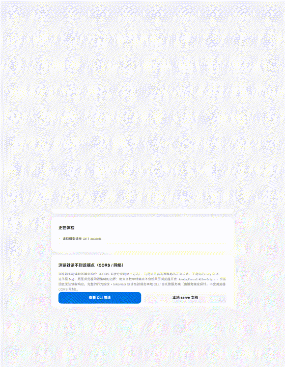

🌐 打开网页就能测：浏览器在线体检
粘贴你自己的中转 Base URL，浏览器直接做可达性、协议结构与基础能力快检，输出三态 fail-closed 报告。
Key 只在你的浏览器内存里直连你填写的端点，不经本项目服务器、不入库、不进日志。
注意：浏览器版受 CORS 限制且无行为参考分布，不会签发 pass；完整行为指纹 + tokenizer 统计核验仍需本地 transit-truth serve。

🚀 本地一键开测：打开网页就能验真
5 秒看懂：
- 本机安装后运行
transit-truth serve，浏览器打开 http://127.0.0.1:8766。
- 填中转站
base_url 与声称模型（如 gpt-4o-mini），可选填 Key（仅本地内存，不落盘/不进日志/不进分享报告）。
- 本地服务端发探针电池 → tokenizer 计数（弱信号）+ 行为分布（主判据）→ 三态 fail-closed 结论。
pip install .
transit-truth serve # 默认 http://127.0.0.1:8766，加 --open 自动开浏览器
工作原理：服务端向目标发有界探针，对比本地参考分布；行为分布（卡方 + KS + 贝叶斯后验 / LR / 95%CI）才是主判据，
tokenizer 计数只是可被公开模仿的弱信号；三态 pass（行为支持） /
suspicious（显著不符） /
insufficient_evidence（证据不足，不硬判）。
为什么这个静态网页不能直接测：浏览器直连第三方中转站受 CORS 限制，且不应把 Key 交给目标域。
本 GitHub Pages 页面只是门面 / 引导 / 离线演示；实时后端必须跑在能执行 Python 的本机、VPS 或 Docker 容器里
（见 docs/serve.md；Cloudflare Workers/Pages 无法运行 Python 引擎）。
[ 截图 / GIF 占位：本地 Web 核验界面 · 待补全 ]
📊 审计结果
🖼️ 分享卡片
生成精美的审计报告分享图，一键下载分享到社交媒体。
🏆 中转站排行榜
内置演示种子数据（非在线排行）。离线演示：审计流程为真实实现，下表与种子数据均为基于公开信息估算的演示样本（各行持续标注"初步数据 / 真实审计"），仅用于展示格式；本地 `transit-truth serve` **没有在线排行榜或投稿端点**，本页不向任何服务器上传、也不接收他人投稿。
| # |
中转站 |
模型 |
信任分 |
等级 |
Token差异 |
延迟 |
状态 |
贡献者 |
💡 说明：本表为页面内置演示种子，本地 `transit-truth serve` 不提供在线排行/投稿端点；下方"贡献"按钮仅演示复制/分享流程，不会把数据提交到任何服务器。演示样本仅供格式展示，不构成投资或购买建议。
⚠️ 免责声明：
本工具仅供用户验证自己使用的服务。审计结果基于有限样本，不构成对任何服务的最终评价。
Token 差异率包含 chat template 开销，不等同于造假。模型指纹为概率性判断，仅当高置信（后验概率 > 0.9 且 95% 置信区间下界 > 0.7）时才构成模型降级证据；低置信或 `insufficient_evidence`（证据不足）一律不构成证据。
本站为离线演示，不发送任何 API Key、不直连中转站；真实模型身份核验在本地/自托管 `transit-truth serve` 进行，Key 仅存于本次会话内存，不进日志、不进可分享报告。